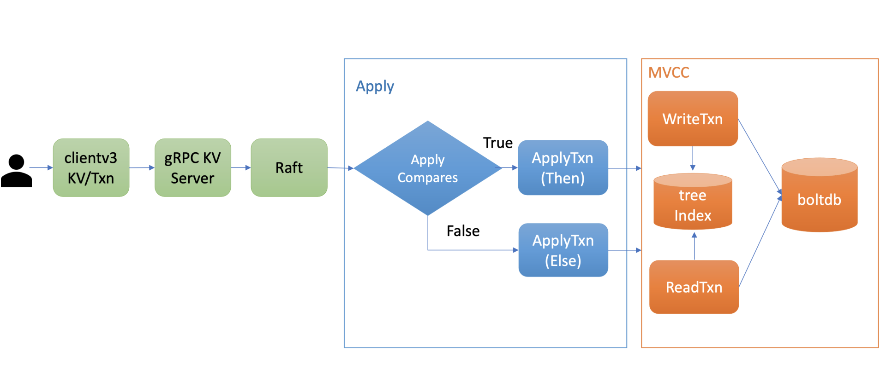
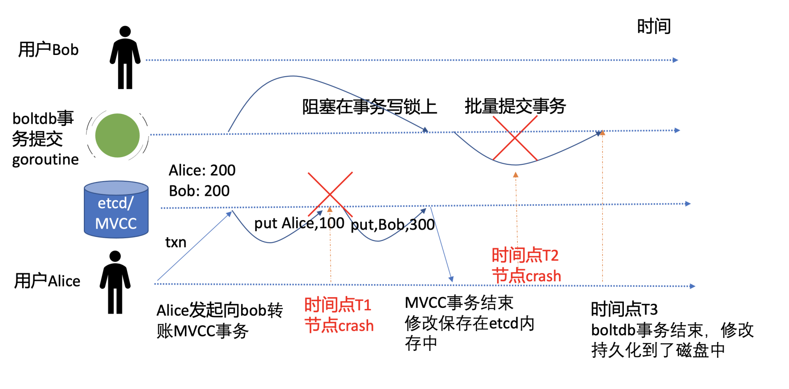
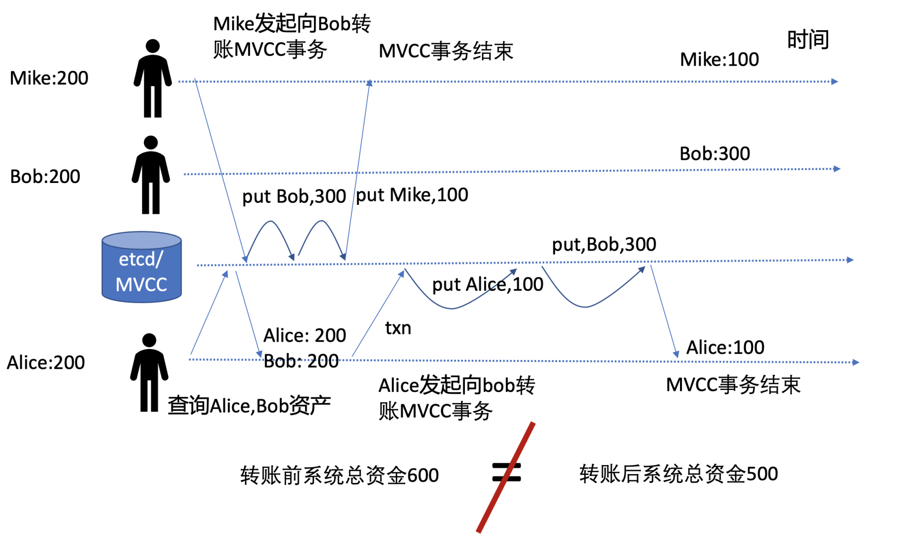
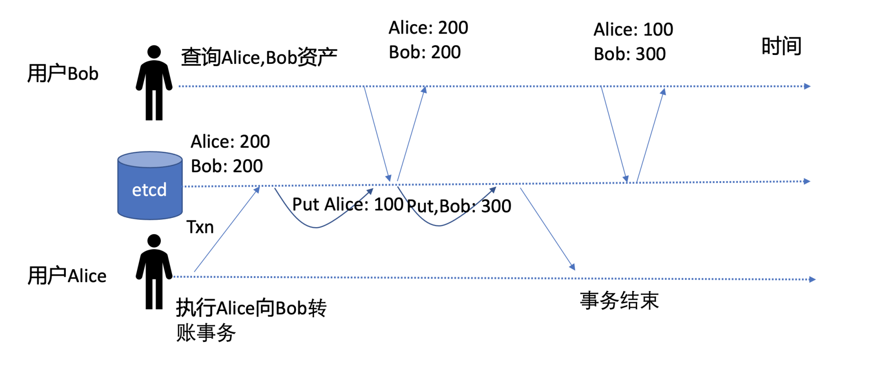
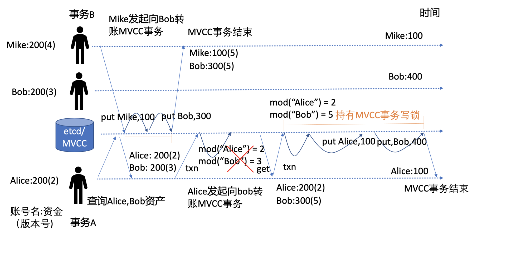

- 00 开篇词 为什么你要学习etcd_.md.html
- 01 etcd的前世今生：为什么Kubernetes使用etcd？.md.html
- 02 基础架构：etcd一个读请求是如何执行的？.md.html
- 03 基础架构：etcd一个写请求是如何执行的？.md.html
- 04 Raft协议：etcd如何实现高可用、数据强一致的？.md.html
- 05 鉴权：如何保护你的数据安全？.md.html
- 06 租约：如何检测你的客户端存活？.md.html
- 07 MVCC：如何实现多版本并发控制？.md.html
- 08 Watch：如何高效获取数据变化通知？.md.html
- 09 事务：如何安全地实现多key操作？.md.html
- 10 boltdb：如何持久化存储你的key-value数据？.md.html
- 11 压缩：如何回收旧版本数据？.md.html
- 12 一致性：为什么基于Raft实现的etcd还会出现数据不一致？.md.html
- 13 db大小：为什么etcd社区建议db大小不超过8G？.md.html
- 14 延时：为什么你的etcd请求会出现超时？.md.html
- 15 内存：为什么你的etcd内存占用那么高？.md.html
- 16 性能及稳定性（上）：如何优化及扩展etcd性能？.md.html
- 17 性能及稳定性（下）：如何优化及扩展etcd性能_.md.html
- 18 实战：如何基于Raft从0到1构建一个支持多存储引擎分布式KV服务？.md.html
- 19 Kubernetes基础应用：创建一个Pod背后etcd发生了什么？.md.html
- 20 Kubernetes高级应用：如何优化业务场景使etcd能支撑上万节点集群？.md.html
- 21 分布式锁：为什么基于etcd实现分布式锁比Redis锁更安全？.md.html
- 22 配置及服务发现：解析etcd在API Gateway开源项目中应用.md.html
- 23 选型：etcd_ZooKeeper_Consul等我们该如何选择？.md.html
- 24 运维：如何构建高可靠的etcd集群运维体系？.md.html
- 特别放送 成员变更：为什么集群看起来正常，移除节点却会失败呢？.md.html
- 结束语 搞懂etcd，掌握通往分布式存储系统之门的钥匙.md.html
- 捐赠
09 事务：如何安全地实现多key操作？
你好，我是唐聪。
在软件开发过程中，我们经常会遇到需要批量执行多个key操作的业务场景，比如转账案例中，Alice给Bob转账100元，Alice账号减少100，Bob账号增加100，这涉及到多个key的原子更新。
无论发生任何故障，我们应用层期望的结果是，要么两个操作一起成功，要么两个一起失败。我们无法容忍出现一个成功，一个失败的情况。那么etcd是如何解决多key原子更新问题呢？
这正是我今天要和你分享的主题——事务，它就是为了简化应用层的编程模型而诞生的。我将通过转账案例为你剖析etcd事务实现，让你了解etcd如何实现事务ACID特性的，以及MVCC版本号在事务中的重要作用。希望通过本节课，帮助你在业务开发中正确使用事务，保证软件代码的正确性。
事务特性初体验及API
如何使用etcd实现Alice向Bob转账功能呢？
在etcd v2的时候， etcd提供了CAS（Compare and swap），然而其只支持单key，不支持多key，因此无法满足类似转账场景的需求。严格意义上说CAS称不上事务，无法实现事务的各个隔离级别。
etcd v3为了解决多key的原子操作问题，提供了全新迷你事务API，同时基于MVCC版本号，它可以实现各种隔离级别的事务。它的基本结构如下：
client.Txn(ctx).If(cmp1, cmp2, ...).Then(op1, op2, ...,).Else(op1, op2, …)
从上面结构中你可以看到，事务API由If语句、Then语句、Else语句组成，这与我们平时常见的MySQL事务完全不一样。
它的基本原理是，在If语句中，你可以添加一系列的条件表达式，若条件表达式全部通过检查，则执行Then语句的get/put/delete等操作，否则执行Else的get/put/delete等操作。
那么If语句支持哪些检查项呢？
首先是key的最近一次修改版本号mod_revision，简称mod。你可以通过它检查key最近一次被修改时的版本号是否符合你的预期。比如当你查询到Alice账号资金为100元时，它的mod_revision是v1，当你发起转账操作时，你得确保Alice账号上的100元未被挪用，这就可以通过mod(“Alice”) = “v1” 条件表达式来保障转账安全性。
其次是key的创建版本号create_revision，简称create。你可以通过它检查key是否已存在。比如在分布式锁场景里，只有分布式锁key(lock)不存在的时候，你才能发起put操作创建锁，这时你可以通过create(“lock”) = “0”来判断，因为一个key不存在的话它的create_revision版本号就是0。
接着是key的修改次数version。你可以通过它检查key的修改次数是否符合预期。比如你期望key在修改次数小于3时，才能发起某些操作时，可以通过version(“key”) < “3”来判断。
最后是key的value值。你可以通过检查key的value值是否符合预期，然后发起某些操作。比如期望Alice的账号资金为200, value(“Alice”) = “200”。
If语句通过以上MVCC版本号、value值、各种比较运算符(等于、大于、小于、不等于)，实现了灵活的比较的功能，满足你各类业务场景诉求。
下面我给出了一个使用etcdctl的txn事务命令，基于以上介绍的特性，初步实现的一个Alice向Bob转账100元的事务。
Alice和Bob初始账上资金分别都为200元，事务首先判断Alice账号资金是否为200，若是则执行转账操作，不是则返回最新资金。etcd是如何执行这个事务的呢？这个事务实现上有哪些问题呢？
$ etcdctl txn -i
compares: //对应If语句
value("Alice") = "200" //判断Alice账号资金是否为200
success requests (get, put, del): //对应Then语句
put Alice 100 //Alice账号初始资金200减100
put Bob 300 //Bob账号初始资金200加100
failure requests (get, put, del): //对应Else语句
get Alice
get Bob
SUCCESS
OK
OK
整体流程

在和你介绍上面案例中的etcd事务原理和问题前，我先给你介绍下事务的整体流程，为我们后面介绍etcd事务ACID特性的实现做准备。
上图是etcd事务的执行流程，当你通过client发起一个txn转账事务操作时，通过gRPC KV Server、Raft模块处理后，在Apply模块执行此事务的时候，它首先对你的事务的If语句进行检查，也就是ApplyCompares操作，如果通过此操作，则执行ApplyTxn/Then语句，否则执行ApplyTxn/Else语句。
在执行以上操作过程中，它会根据事务是否只读、可写，通过MVCC层的读写事务对象，执行事务中的get/put/delete各操作，也就是我们上一节课介绍的MVCC对key的读写原理。
事务ACID特性
了解完事务的整体执行流程后，那么etcd应该如何正确实现上面案例中Alice向Bob转账的事务呢？别着急，我们先来了解一下事务的ACID特性。在你了解了etcd事务ACID特性实现后，这个转账事务案例的正确解决方案也就简单了。
ACID是衡量事务的四个特性，由原子性（Atomicity）、一致性（Consistency）、隔离性（Isolation）、持久性（Durability）组成。接下来我就为你分析ACID特性在etcd中的实现。
原子性与持久性
事务的原子性（Atomicity）是指在一个事务中，所有请求要么同时成功，要么同时失败。比如在我们的转账案例中，是绝对无法容忍Alice账号扣款成功，但是Bob账号资金到账失败的场景。
持久性（Durability）是指事务一旦提交，其所做的修改会永久保存在数据库。
软件系统在运行过程中会遇到各种各样的软硬件故障，如果etcd在执行上面事务过程中，刚执行完扣款命令（put Alice 100）就突然crash了，它是如何保证转账事务的原子性与持久性的呢？

如上图转账事务流程图所示，etcd在执行一个事务过程中，任何时间点都可能会出现节点crash等异常问题。我在图中给你标注了两个关键的异常时间点，它们分别是T1和T2。接下来我分别为你分析一下etcd在这两个关键时间点异常后，是如何保证事务的原子性和持久性的。
T1时间点
T1时间点是在Alice账号扣款100元完成时，Bob账号资金还未成功增加时突然发生了crash。
从前面介绍的etcd写原理和上面流程图我们可知，此时MVCC写事务持有boltdb写锁，仅是将修改提交到了内存中，保证幂等性、防止日志条目重复执行的一致性索引consistent index也并未更新。同时，负责boltdb事务提交的goroutine因无法持有写锁，也并未将事务提交到持久化存储中。
因此，T1时间点发生crash异常后，事务并未成功执行和持久化任意数据到磁盘上。在节点重启时，etcd server会重放WAL中的已提交日志条目，再次执行以上转账事务。因此不会出现Alice扣款成功、Bob到帐失败等严重Bug，极大简化了业务的编程复杂度。
T2时间点
T2时间点是在MVCC写事务完成转账，server返回给client转账成功后，boltdb的事务提交goroutine，批量将事务持久化到磁盘中时发生了crash。这时etcd又是如何保证原子性和持久性的呢?
我们知道一致性索引consistent index字段值是和key-value数据在一个boltdb事务里同时持久化到磁盘中的。若在boltdb事务提交过程中发生crash了，简单情况是consistent index和key-value数据都更新失败。那么当节点重启，etcd server重放WAL中已提交日志条目时，同样会再次应用转账事务到状态机中，因此事务的原子性和持久化依然能得到保证。
更复杂的情况是，当boltdb提交事务的时候，会不会部分数据提交成功，部分数据提交失败呢？这个问题，我将在下一节课通过深入介绍boltdb为你解答。
了解完etcd事务的原子性和持久性后，那一致性又是怎么一回事呢？事务的一致性难道是指各个节点数据一致性吗？
一致性
在软件系统中，到处可见一致性（Consistency）的表述，其实在不同场景下，它的含义是不一样的。
首先分布式系统中多副本数据一致性，它是指各个副本之间的数据是否一致，比如Redis的主备是异步复制的，那么它的一致性是最终一致性的。
其次是CAP原理中的一致性是指可线性化。核心原理是虽然整个系统是由多副本组成，但是通过线性化能力支持，对client而言就如一个副本，应用程序无需关心系统有多少个副本。
然后是一致性哈希，它是一种分布式系统中的数据分片算法，具备良好的分散性、平衡性。
最后是事务中的一致性，它是指事务变更前后，数据库必须满足若干恒等条件的状态约束，一致性往往是由数据库和业务程序两方面来保障的。
在Alice向Bob转账的案例中有哪些恒等状态呢？
很明显，转账系统内的各账号资金总额，在转账前后应该一致，同时各账号资产不能小于0。
为了帮助你更好地理解前面转账事务实现的问题，下面我给你画了幅两个并发转账事务的流程图。
图中有两个并发的转账事务，Mike向Bob转账100元，Alice也向Bob转账100元，按照我们上面的事务实现，从下图可知转账前系统总资金是600元，转账后却只有500元了，因此它无法保证转账前后账号系统内的资产一致性，导致了资产凭空消失，破坏了事务的一致性。

事务一致性被破坏的根本原因是，事务中缺少对Bob账号资产是否发生变化的判断，这就导致账号资金被覆盖。
为了确保事务的一致性，一方面，业务程序在转账逻辑里面，需检查转账者资产大于等于转账金额。在事务提交时，通过账号资产的版本号，确保双方账号资产未被其他事务修改。若双方账号资产被其他事务修改，账号资产版本号会检查失败，这时业务可以通过获取最新的资产和版本号，发起新的转账事务流程解决。
另一方面，etcd会通过WAL日志和consistent index、boltdb事务特性，去确保事务的原子性，因此不会有部分成功部分失败的操作，导致资金凭空消失、新增。
介绍完事务的原子性和持久化、一致性后，我们再看看etcd又是如何提供各种隔离级别的事务，在转账过程中，其他client能看到转账的中间状态吗(如Alice扣款成功，Bob还未增加时)？
隔离性
ACID中的I是指Isolation，也就是事务的隔离性，它是指事务在执行过程中的可见性。常见的事务隔离级别有以下四种。
首先是未提交读（Read UnCommitted），也就是一个client能读取到未提交的事务。比如转账事务过程中，Alice账号资金扣除后，Bob账号上资金还未增加，这时如果其他client读取到这种中间状态，它会发现系统总金额钱减少了，破坏了事务一致性的约束。
其次是已提交读（Read Committed），指的是只能读取到已经提交的事务数据，但是存在不可重复读的问题。比如事务开始时，你读取了Alice和Bob资金，这时其他事务修改Alice和Bob账号上的资金，你在事务中再次读取时会读取到最新资金，导致两次读取结果不一样。
接着是可重复读（Repeated Read），它是指在一个事务中，同一个读操作get Alice/Bob在事务的任意时刻都能得到同样的结果，其他修改事务提交后也不会影响你本事务所看到的结果。
最后是串行化（Serializable），它是最高的事务隔离级别，读写相互阻塞，通过牺牲并发能力、串行化来解决事务并发更新过程中的隔离问题。对于串行化我要和你特别补充一点，很多人认为它都是通过读写锁，来实现事务一个个串行提交的，其实这只是在基于锁的并发控制数据库系统实现而已。为了优化性能，在基于MVCC机制实现的各个数据库系统中，提供了一个名为“可串行化的快照隔离”级别，相比悲观锁而言，它是一种乐观并发控制，通过快照技术实现的类似串行化的效果，事务提交时能检查是否冲突。
下面我重点和你介绍下未提交读、已提交读、可重复读、串行化快照隔离。
未提交读
首先是最低的事务隔离级别，未提交读。我们通过如下一个转账事务时间序列图，来分析下一个client能否读取到未提交事务修改的数据，是否存在脏读。

图中有两个事务，一个是用户查询Alice和Bob资产的事务，一个是我们执行Alice向Bob转账的事务。
如图中所示，若在Alice向Bob转账事务执行过程中，etcd server收到了client查询Alice和Bob资产的读请求，显然此时我们无法接受client能读取到一个未提交的事务，因为这对应用程序而言会产生严重的BUG。那么etcd是如何保证不出现这种场景呢？
我们知道etcd基于boltdb实现读写操作的，读请求由boltdb的读事务处理，你可以理解为快照读。写请求由boltdb写事务处理，etcd定时将一批写操作提交到boltdb并清空buffer。
由于etcd是批量提交写事务的，而读事务又是快照读，因此当MVCC写事务完成时，它需要更新buffer，这样下一个读请求到达时，才能从buffer中获取到最新数据。
在我们的场景中，转账事务并未结束，执行put Alice为100的操作不会回写buffer，因此避免了脏读的可能性。用户此刻从boltdb快照读事务中查询到的Alice和Bob资产都为200。
从以上分析可知，etcd并未使用悲观锁来解决脏读的问题，而是通过MVCC机制来实现读写不阻塞，并解决脏读的问题。
已提交读、可重复读
比未提交读隔离级别更高的是已提交读，它是指在事务中能读取到已提交数据，但是存在不可重复读的问题。已提交读，也就是说你每次读操作，若未增加任何版本号限制，默认都是当前读，etcd会返回最新已提交的事务结果给你。
如何理解不可重复读呢?
在上面用户查询Alice和Bob事务的案例中，第一次查出来资产都是200，第二次是Alice为100，Bob为300，通过读已提交模式，你能及时获取到etcd最新已提交的事务结果，但是出现了不可重复读，两次读出来的Alice和Bob资产不一致。
那么如何实现可重复读呢？
你可以通过MVCC快照读，或者参考etcd的事务框架STM实现，它在事务中维护一个读缓存，优先从读缓存中查找，不存在则从etcd查询并更新到缓存中，这样事务中后续读请求都可从缓存中查找，确保了可重复读。
最后我们再来重点介绍下什么是串行化快照隔离。
串行化快照隔离
串行化快照隔离是最严格的事务隔离级别，它是指在在事务刚开始时，首先获取etcd当前的版本号rev，事务中后续发出的读请求都带上这个版本号rev，告诉etcd你需要获取那个时间点的快照数据，etcd的MVCC机制就能确保事务中能读取到同一时刻的数据。
同时，它还要确保事务提交时，你读写的数据都是最新的，未被其他人修改，也就是要增加冲突检测机制。当事务提交出现冲突的时候依赖client重试解决，安全地实现多key原子更新。
那么我们应该如何为上面一致性案例中，两个并发转账的事务，增加冲突检测机制呢？
核心就是我们前面介绍MVCC的版本号，我通过下面的并发转账事务流程图为你解释它是如何工作的。

如上图所示，事务A，Alice向Bob转账100元，事务B，Mike向Bob转账100元，两个事务同时发起转账操作。
一开始时，Mike的版本号(指mod_revision)是4，Bob版本号是3，Alice版本号是2，资产各自200。为了防止并发写事务冲突，etcd在一个写事务开始时，会独占一个MVCC读写锁。
事务A会先去etcd查询当前Alice和Bob的资产版本号，用于在事务提交时做冲突检测。在事务A查询后，事务B获得MVCC写锁并完成转账事务，Mike和Bob账号资产分别为100，300，版本号都为5。
事务B完成后，事务A获得写锁，开始执行事务。
为了解决并发事务冲突问题，事务A中增加了冲突检测，期望的Alice版本号应为2，Bob为3。结果事务B的修改导致Bob版本号变成了5，因此此事务会执行失败分支，再次查询Alice和Bob版本号和资产，发起新的转账事务，成功通过MVCC冲突检测规则mod(“Alice”) = 2 和 mod(“Bob”) = 5 后，更新Alice账号资产为100，Bob资产为400，完成转账操作。
通过上面介绍的快照读和MVCC冲突检测检测机制，etcd就可实现串行化快照隔离能力。
转账案例应用
介绍完etcd事务ACID特性实现后，你很容易发现事务特性初体验中的案例问题了，它缺少了完整事务的冲突检测机制。
首先你可通过一个事务获取Alice和Bob账号的上资金和版本号，用以判断Alice是否有足够的金额转账给Bob和事务提交时做冲突检测。 你可通过如下etcdctl txn命令，获取Alice和Bob账号的资产和最后一次修改时的版本号(mod_revision):
$ etcdctl txn -i -w=json
compares:
success requests (get, put, del):
get Alice
get Bob
failure requests (get, put, del):
{
"kvs":[
{
"key":"QWxpY2U=",
"create_revision":2,
"mod_revision":2,
"version":1,
"value":"MjAw"
}
],
......
"kvs":[
{
"key":"Qm9i",
"create_revision":3,
"mod_revision":3,
"version":1,
"value":"MzAw"
}
],
}
其次发起资金转账操作，Alice账号减去100，Bob账号增加100。为了保证转账事务的准确性、一致性，提交事务的时候需检查Alice和Bob账号最新修改版本号与读取资金时的一致(compares操作中增加版本号检测)，以保证其他事务未修改两个账号的资金。
若compares操作通过检查，则执行转账操作，否则执行查询Alice和Bob账号资金操作，命令如下:
$ etcdctl txn -i
compares:
mod("Alice") = "2"
mod("Bob") = "3"
success requests (get, put, del):
put Alice 100
put Bob 300
failure requests (get, put, del):
get Alice
get Bob
SUCCESS
OK
OK
到这里我们就完成了一个安全的转账事务操作，从以上流程中你可以发现，自己从0到1实现一个完整的事务还是比较繁琐的，幸运的是，etcd社区基于以上介绍的事务特性，提供了一个简单的事务框架STM，构建了各个事务隔离级别类，帮助你进一步简化应用编程复杂度。
小结
最后我们来小结下今天的内容。首先我给你介绍了事务API的基本结构，它由If、Then、Else语句组成。
其中If支持多个比较规则，它是用于事务提交时的冲突检测，比较的对象支持key的mod_revision、create_revision、version、value值。随后我给你介绍了整个事务执行的基本流程，Apply模块首先执行If的比较规则，为真则执行Then语句，否则执行Else语句。
接着通过转账案例，四幅转账事务时间序列图，我为你分析了事务的ACID特性，剖析了在etcd中事务的ACID特性的实现。
原子性是指一个事务要么全部成功要么全部失败，etcd基于WAL日志、consistent index、boltdb的事务能力提供支持。
一致性是指事务转账前后的，数据库和应用程序期望的恒等状态应该保持不变，这通过数据库和业务应用程序相互协作完成。
持久性是指事务提交后，数据不丢失，
隔离性是指事务提交过程中的可见性，etcd不存在脏读，基于MVCC机制、boltdb事务你可以实现可重复读、串行化快照隔离级别的事务，保障并发事务场景中你的数据安全性。
思考题
在数据库事务中，有各种各样的概念，比如脏读、脏写、不可重复读与读倾斜、幻读与写倾斜、更新丢失、快照隔离、可串行化快照隔离? 你知道它们的含义吗？
感谢你的阅读，如果你认为这节课的内容有收获，也欢迎把它分享给你的朋友，谢谢。
© 2019 - 2023 Liangliang Lee. Powered by gin and hexo-theme-book.